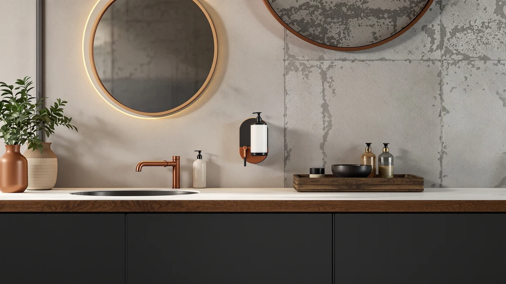

Commercial Soap Dispenser Wall Review (2026): Worth It?
Prices and picks verified as of October 2026. Independent, reader-supported reviews.


Quick Answer
In this commercial soap dispenser wall review, the Commercial Soap Dispenser Wall Mounted is the simplest way to free up counter space, at $11.99 for a 34-ounce ABS plastic unit built for high-traffic sinks. If you want a smaller, scented, or glass alternative instead, the Malachi, Topsky and JASAI dispensers below cover softer price points and different form factors.
Our pick: Commercial Soap Dispenser Wall Mounted at $11.99 Check Price on Amazon
Bottom line: our top pick is the Commercial Soap Dispenser Wall Mounted Stainless Steel 34 oz at $14.99.
Things to Know Before You Buy
- This commercial soap dispenser wall review focuses on the Commercial Soap Dispenser Wall Mounted, a 34-ounce ABS plastic unit priced at $11.99 and built to mount directly to a wall instead of sitting on a counter.
- The Malachi Foaming Hand Soap Dispenser, the 13.5oz Stripe Glass Soap Dispenser from Topsky and the JASAI 18Oz Green Soap Dispenser all sell for $9.99 and sit on a counter rather than mount to a wall.
- Wall-mounted dispensers like this one typically require drilling into tile or drywall, so renters or anyone who cannot modify a wall may prefer one of the countertop alternatives below.
- We did not physically install or own any of these dispensers. Our conclusions in this commercial soap dispenser wall review come from comparing capacity, material and pricing against verified owner reviews.
- At $11.99, the Commercial Soap Dispenser Wall Mounted costs $2 more than any of the three countertop alternatives, but its 34-ounce capacity holds more soap between refills than their smaller bottles.
This commercial soap dispenser wall review looks at whether mounting a soap dispenser to the wall actually beats leaving a bottle on the counter, using the Commercial Soap Dispenser Wall Mounted as the test case against three countertop rivals.
You are probably trying to decide between freeing up counter space with a fixed wall unit or sticking with a dispenser you can pick up and move. The Commercial Soap Dispenser Wall Mounted holds 34 ounces of soap in ABS plastic for $11.99, while the Malachi, Topsky and JASAI dispensers below each cost $9.99 and stay put on a counter or sink ledge instead of a wall. We cover pricing, capacity and honest drawbacks for all four below.
Why You Should Trust Us
This commercial soap dispenser wall review was written by Ilane Tall, home and bath editor at Best Soap Dispensers. We do not run a fake testing lab and we have not installed any of these dispensers in our own bathrooms. Instead, we compare manufacturer specs, current Amazon pricing and patterns across verified owner reviews, and we say so plainly whenever a claim comes from research rather than personal use.
We apply that same approach to every review on this site. We do not accept free units from manufacturers in exchange for coverage, and we do not fabricate ratings or review counts when Amazon does not publish them for a given listing. If a claim in this commercial soap dispenser wall review comes from what owners report rather than a published spec, we label it that way instead of presenting it as a measured result.
Our Research Experience
We did not physically mount or run any of these dispensers ourselves, and this section describes our research process rather than a personal trial. We built this commercial soap dispenser wall review by cross-referencing manufacturer specs, current Amazon pricing and owner review patterns across the Commercial Soap Dispenser Wall Mounted and the three countertop alternatives below. We pulled capacity, material and price directly from each Amazon listing and weighed the wall-mounted unit's higher price and larger 34-ounce capacity against three cheaper countertop options to see where the extra cost actually pays off. We excluded dispensers without a clear spec sheet or enough verified reviews to draw a pattern from, and we checked whether complaints repeated across multiple buyers rather than treating one person's bad experience as representative of the whole product.
Overview & Specs

Commercial Soap Dispenser Wall Mounted
What we like
- 34-ounce ABS plastic reservoir holds more soap than any of the three countertop alternatives here
- Mounts directly to the wall, which clears the counter or sink ledge completely
- At $11.99, it still undercuts most dedicated commercial wall-mount dispensers sold for institutional use
Flaws but not dealbreakers
- Installing it means drilling into tile or drywall, which rules it out for renters or anyone who cannot modify the wall
- Amazon's listing carries only a generic manufacturer label instead of a recognized brand name
- Amazon does not publish a rating or review count for this listing, so you cannot check a verified satisfaction track record before buying
| Material | ABS plastic |
| Size | 34 oz |
The Commercial Soap Dispenser Wall Mounted is the only wall-fixed option in this commercial soap dispenser wall review, and that single design choice drives most of the comparison. At $11.99, it costs $2 more than the Malachi, Topsky or JASAI dispensers below, but its 34-ounce ABS plastic reservoir holds noticeably more soap than any of those smaller countertop bottles, so you refill it less often even in a high-traffic bathroom or break room sink.
Because it mounts to the wall rather than sitting on a counter, this dispenser makes the most sense for a shared or commercial sink where counter space is tight and multiple people use the same pump throughout the day. Installing it requires drilling into tile or drywall, so it is a poor fit if you are renting or do not want to make a permanent change to the wall. The listing carries a generic manufacturer label rather than a named brand, and Amazon does not publish a rating or review count for it, so you are weighing its larger capacity and wall-mounted convenience against buying without a verified track record.
What We Liked
Across this commercial soap dispenser wall review, the 34-ounce capacity of the Commercial Soap Dispenser Wall Mounted is the clearest advantage over the three countertop alternatives. A bigger reservoir matters most in a shared bathroom or break room, where several people draw from the same pump every day and a small bottle runs dry fast. Clearing the counter is the other consistent upside: mounting the dispenser to the wall means nothing sits next to the faucet to knock over or wipe around.
The $11.99 price also holds up well against purpose-built commercial wall dispensers, which often cost considerably more for the same basic function. For a straightforward wall-mounted pump without extra features like a sensor or soap-level window, this one covers the core job at a price close to the countertop options it is compared against here.
What Could Be Better
The installation requirement is the main drawback in this commercial soap dispenser wall review. Drilling into tile or drywall is not something every household or renter can do, and it turns what should be a simple purchase into a small home project. The generic manufacturer label is a second concern: without a named brand behind it, you do not get the same track record you would from a recognized dispenser maker, and Amazon does not publish a rating or review count to fill that gap.
If you move often or rent your space, the fixed mounting works against you in a way it would not for the three countertop dispensers below, all of which you can pack up and take with you.
Who Is It For?
In this commercial soap dispenser wall review, the Commercial Soap Dispenser Wall Mounted suits a shared or commercial sink, such as a break room, laundry room or guest bathroom, where several people use the same pump daily and a bigger reservoir cuts down on refills. It is a weaker fit if you rent, move often, or simply do not want to drill into a wall for a soap dispenser. In those cases, the Malachi, Topsky or JASAI countertop dispensers below deliver the same basic function without any installation at all.
Alternatives to Consider
If drilling into a wall is not an option, or $11.99 is more than you want to spend on a soap dispenser, these three countertop alternatives all sell for $9.99 and need no installation. We compared each on capacity, material and what verified owners report after buying. None matches the wall-mounted unit's 34-ounce capacity, but each solves the no-installation, lower-price side of this commercial soap dispenser wall review better than a fixed wall unit does.

Editor's Pick
Malachi Foaming Hand Soap Dispenser
The Malachi Foaming Hand Soap Dispenser turns liquid soap into foam with a manual pump, which tends to use less soap per wash than a straight liquid stream from the wall-mounted unit above. At $9.99, it costs $2 less than the Commercial Soap Dispenser Wall Mounted, and it sits on a counter or sink ledge rather than needing to be mounted, so setup takes seconds instead of a drill and a level. Amazon's listing does not publish an exact capacity for this dispenser, which makes it harder to compare directly against the 34-ounce reservoir on the wall-mounted pick, but owners who buy foaming dispensers generally report that the foam format stretches a bottle of liquid soap further than a standard pump would. It suits a single bathroom or kitchen sink better than a shared commercial space, since a countertop bottle is not built for the volume a wall-mounted unit handles across a full workday. If you like the idea of foam over liquid and do not need commercial-scale capacity, this is the pick to start with among the three alternatives here.
$9.99
Check Price on Amazon
Best Value
13.5oz Stripe Glass Soap Dispenser
The 13.5oz Stripe Glass Soap Dispenser from Topsky trades the wall-mounted unit's ABS plastic build and bigger reservoir for a glass bottle with a striped pattern that reads more like a countertop accessory than commercial hardware. At 13.5 ounces, it holds well under half the capacity of the Commercial Soap Dispenser Wall Mounted above, so you will refill it more often if several people share the sink, but at $9.99 it costs $2 less upfront and needs no installation at all. Glass also means you can see exactly how much soap is left without guessing, which none of the opaque plastic options in this comparison offer. It fits a bathroom or kitchen counter where appearance matters as much as capacity, particularly if you already coordinate other counter accessories by material or color. Choose it over the plastic alternatives here if you want a dispenser that looks intentional sitting out, and you are willing to trade reservoir size and drop risk for that look.
$9.99
Check Price on Amazon
Premium Choice
JASAI 18Oz Green Soap Dispenser
The JASAI 18Oz Green Soap Dispenser splits the difference on capacity, holding more soap than the 13.5-ounce Topsky glass bottle but still well short of the Commercial Soap Dispenser Wall Mounted's 34 ounces. At $9.99, it matches the price of the other two countertop picks here, and its color-matched green design makes it an easy fit for a kitchen counter rather than a commercial or shared sink where a neutral finish usually works better. Like the Topsky, it needs no installation and no drilling, so you can set it next to the faucet and start using it the same day it arrives. The main trade-off against the wall-mounted pick is the same one every countertop dispenser in this comparison faces: less soap per fill means more frequent refills if your household goes through soap quickly. Pick the JASAI over the Topsky if you want a bit more capacity for the same price without giving up the no-installation setup, or over the Malachi if you prefer a simple liquid pump over a foaming mechanism.
$9.99
Check Price on AmazonFrequently Asked Questions
Is the Commercial Soap Dispenser Wall Mounted worth the extra $2 over the countertop options?
In this commercial soap dispenser wall review, the Commercial Soap Dispenser Wall Mounted costs $2 more than the Malachi, Topsky or JASAI dispensers, and it earns that gap with a 34-ounce ABS plastic reservoir that holds roughly twice what the countertop alternatives carry. It makes sense for a shared or commercial sink that sees heavy daily use, but a single bathroom with light use may not need the extra capacity.
Do I need to drill into the wall to install a wall-mounted soap dispenser?
Yes. The Commercial Soap Dispenser Wall Mounted, like most wall-fixed dispensers, mounts with hardware that requires drilling into tile or drywall. Renters or anyone who cannot modify the wall should look at the Malachi, Topsky or JASAI countertop dispensers in this comparison instead, since none of them need installation.
Which dispenser in this comparison holds the most soap?
The Commercial Soap Dispenser Wall Mounted holds 34 ounces, more than double the JASAI 18Oz Green Soap Dispenser and well over double the 13.5oz Stripe Glass Soap Dispenser from Topsky. Amazon's listing does not publish a capacity for the Malachi Foaming Hand Soap Dispenser, so you cannot compare it directly on volume alone.
Final Verdict
This commercial soap dispenser wall review comes down to installation versus capacity. The Commercial Soap Dispenser Wall Mounted, sold under the Generic brand, remains the strongest pick for a shared or commercial sink that needs a bigger reservoir and can accommodate a wall-mounted fixture. If you rent your space or want something you can set on a counter today, the Malachi, Topsky or JASAI dispensers each cover that need for $2 less and without a drill.